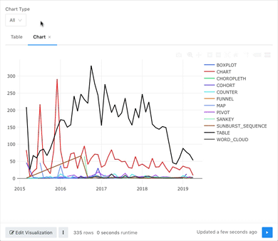

Since I see this question a lot, here’s a solution you can paste into your own queries. You can play around with this query on the demo instance of Redash. Just login with any Google account to try it out. The Query is called All or Specific Query Parameter Example.
SELECT count(*),
TYPE as "type",
CASE WHEN date_part('month', created_at) < 10 THEN
CAST(DATE_PART('year', created_at) || '-0' || DATE_PART('month', created_at) || '-' || '01' AS VARCHAR)
ELSE
CAST(DATE_PART('year', created_at) || '-' || DATE_PART('month', created_at) || '-' || '01' AS VARCHAR)
END AS month_created
FROM visualizations
WHERE ('{{ chart_type}}' = 'All' OR type = '{{ chart_type }}')
GROUP BY TYPE,
case when date_part('month', created_at) < 10 THEN
CAST(DATE_PART('year', created_at) || '-0' || DATE_PART('month', created_at) || '-' || '01' as varchar)
else
CAST(DATE_PART('year', created_at) || '-' || DATE_PART('month', created_at) || '-' || '01' as varchar)
END
This query shows how many charts in the demo instance were created each month along with their chart type. The critical part is the WHERE clause.
The chart_type parameter is a Query Based Dropdown List that depends on a separate query in the demo instance. The separate query pulls the DISTINCT names of chart types. The addition of a union lets me include “All” as an option in the parameter dropdown.
SELECT 'All' as chart_type
UNION ALL
(SELECT DISTINCT type AS chart_type FROM visualizations ORDER BY type ASC)
Here it is in action. The parameter lets you view all results or narrow down to a specific chart type. This performs better than query filter on large data sets. You can even map multiple visualizations together this way on a dashboard.

{kind=link}